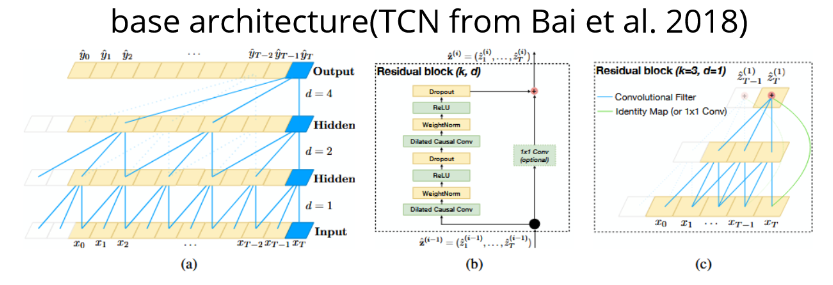

Temporal Convolutional Networks on the Tennessee Eastman Process

This project explores the use and implementation of Temporal Convolutional Networks (TCNs) for multivariate time-series anomaly detection and classification on the Tennessee Eastman Process (TEP) dataset in TensorFlow.
🔗 View Repository
Placeholder
placeholder
Placeholder
placeholder